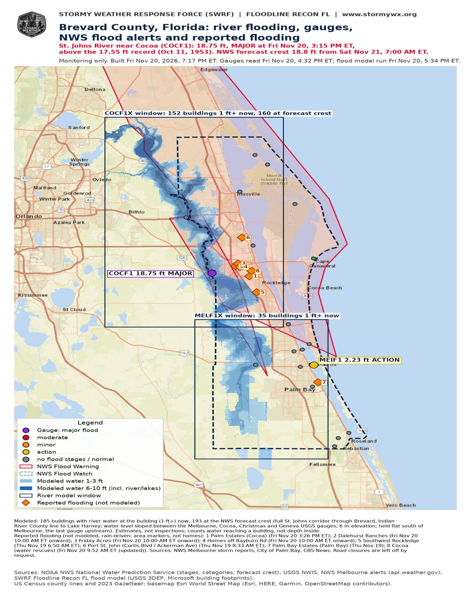
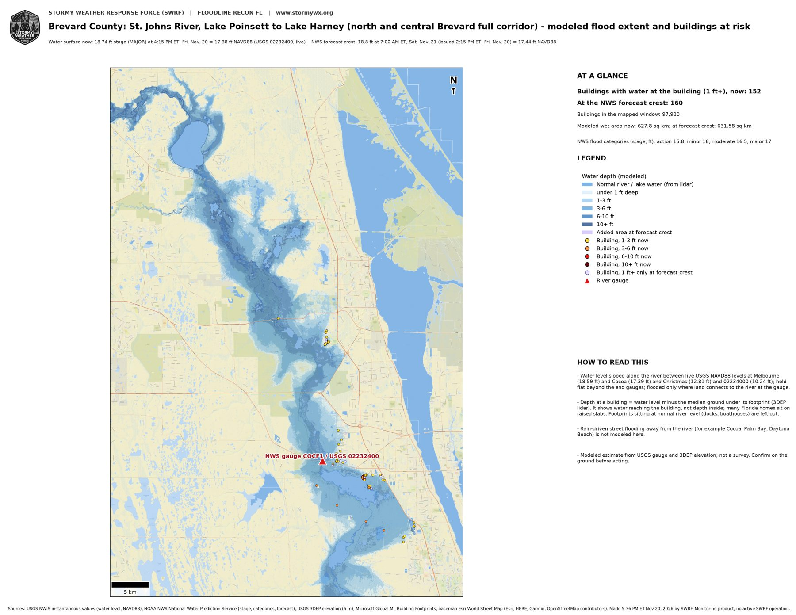
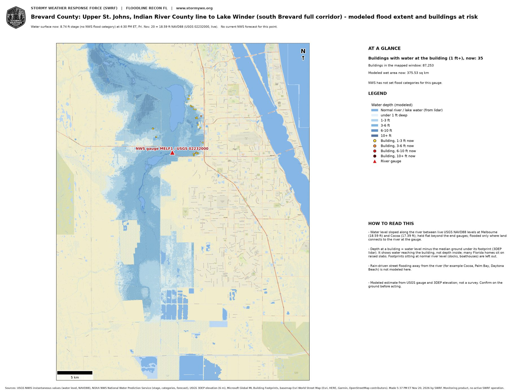
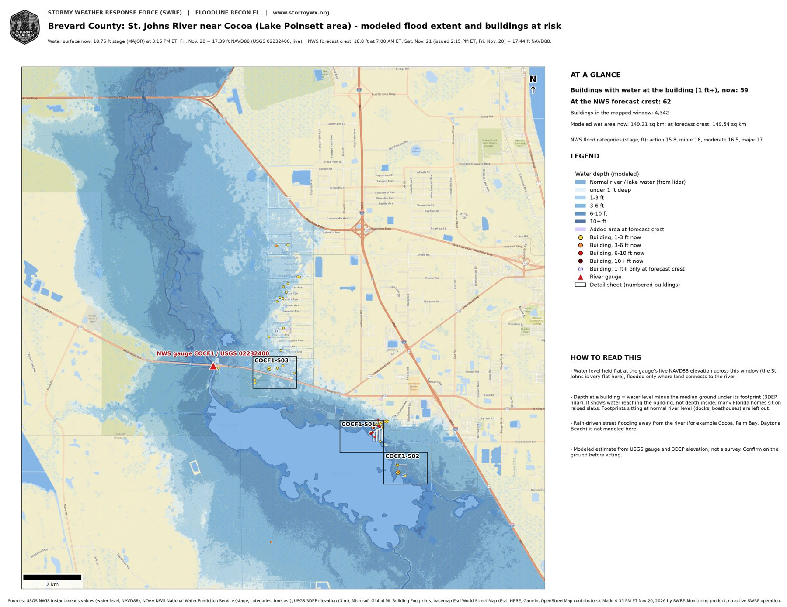
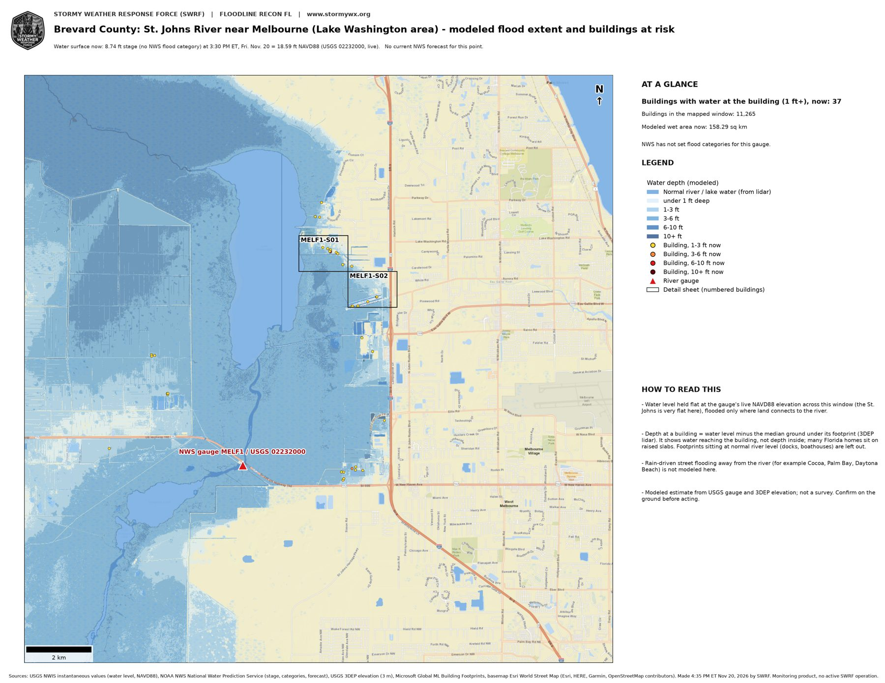
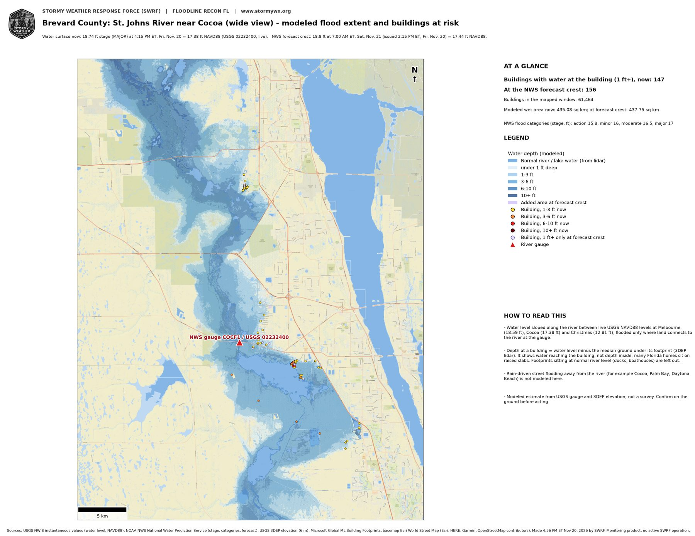
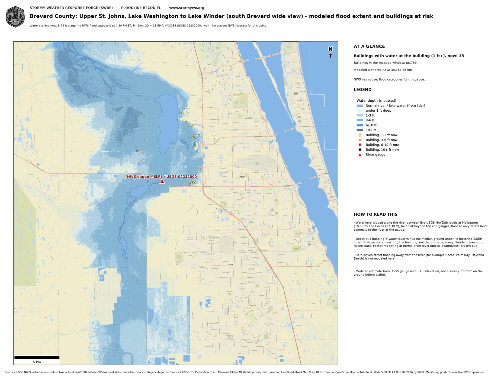

Brevard County flood status
Updated Fri Nov 20, 2026, 7:17 PM ET. River gauges read Fri Nov 20, 4:32 PM ET. SWRF is monitoring. If you are in danger, call 911.
Ask SWRF for flood helpOpen the flood map
What NWS says happens at this level near Cocoa: 17.2 ft: Water enters homes along the St Johns River in the Lake Poinsett area west of Cocoa, also low lying homes in the Silver Pines subdivision in Rockledge and the Shakespeare Park area of Cocoa. Providence Road area west of Cocoa becomes impassable, cutting off access to homes in the Mullet Lane and Bass Road area. Docks flooded and water in parking lot at Lone Cabbage Fish Camp.
Flood map

Tap the map to open the interactive version (gauges, NWS alerts, modeled river flooding). Estimates from river gauges and land height. Nobody has inspected these buildings.
Reported flooding the river model does not show
These places had flooding reported by officials or the news, mostly from rain, away from the St. Johns River. The river model cannot show them. Markers show the area, not a home. Road closures are not listed here.
- Palm Estates (Cocoa): Emergency Management reported extensive flooding in the Palm Estates area of Cocoa. (NWS Melbourne LSR (Emergency Manager), Fri Nov 20, 3:26 PM ET, source)
- Dalehurst Ranches: Extensive flooding, several 911 water-rescue calls (south and east of the I-95 / SR-528 interchange). (NWS Melbourne LSR (Emergency Manager), issued 4:01 PM ET, Fri Nov 20, 10:00 AM ET onward, source)
- Friday Acres: Extensive flooding, several 911 water-rescue calls. (NWS Melbourne LSR (Emergency Manager), issued 4:01 PM ET, Fri Nov 20, 10:00 AM ET onward, source)
- Homes off Rayburn Rd: Extensive flooding, several 911 water-rescue calls. (NWS Melbourne LSR (Emergency Manager), issued 4:01 PM ET, Fri Nov 20, 10:00 AM ET onward, source)
- Southwest Rockledge: Knee-deep water, beginning to enter homes. (NWS Melbourne LSR (storm chaser), Thu Nov 19, 6:50 AM ET, source)
- Port St. John (Curtis Blvd / Ackerman Ave): Neighborhood streets completely covered by water (photo). (NWS Melbourne LSR (public, social media photo), Thu Nov 19, 8:33 AM ET, source)
- Palm Bay Estates (Palm Bay): Mandatory evacuation of about 65 homes west of the canal and east of the railroad; voluntary for the rest of Palm Bay Estates. Residents moved by boat (also News 6, 10:12 AM ET). (City of Palm Bay press release (via Public), Thu Nov 19, 2026, source)
- Cocoa (water rescues): More than 100 water rescues in Brevard over two days, many in Cocoa. (CBS News, Fri Nov 20, 9:52 AM ET (updated), source)
Detailed maps: St. Johns River in Brevard






River and lagoon gauges at or near flood stage
| Gauge | Now | Category | Reading | NWS forecast crest | Link |
|---|---|---|---|---|---|
| St. Johns River near Cocoa COCF1 / USGS 2232400.0 | 18.75 ft | major | Fri Nov 20, 3:15 PM ET | 18.8 ft, Sat Nov 21, 7:00 AM ET | NWS |
| Indian River at Melbourne (in MHHW) MEIF1 | 2.23 ft | action | Fri Nov 20, 3:54 PM ET | none issued | NWS |
All 19 Brevard gauges
| Gauge | Now | Category | Reading | NWS forecast crest | Link |
|---|---|---|---|---|---|
| St. Johns River near Cocoa COCF1 / USGS 2232400.0 | 18.75 ft | major | Fri Nov 20, 3:15 PM ET | 18.8 ft, Sat Nov 21, 7:00 AM ET | NWS |
| Indian River at Melbourne (in MHHW) MEIF1 | 2.23 ft | action | Fri Nov 20, 3:54 PM ET | none issued | NWS |
| Crane Creek at Melbourne CCMF1 | 9.27 ft | not defined | Fri Nov 20, 3:15 PM ET | none issued | NWS |
| St. Johns River above CHRISTMAS 5SE CHRF1 | 12.48 ft | not defined | Fri Nov 20, 3:30 PM ET | none issued | NWS |
| Eau Gallie River at Heather Glen Cir Melbourne EAUF1 | 13.78 ft | not defined | Fri Nov 20, 3:15 PM ET | none issued | NWS |
| Fellsmere Canal near Micco FECF1 | 5.32 ft | not defined | Fri Nov 20, 3:30 PM ET | none issued | NWS |
| Haulover Canal near Mims HLOF1 | 3.04 ft | not defined | Fri Nov 20, 3:45 PM ET | none issued | NWS |
| Indian River at Indian Harbour Beach (in MHHW) IHBF1 | 2.44 ft | not defined | Fri Nov 20, 2:54 PM ET | none issued | NWS |
| Indian River near Pineda Causeway (in MHHW) IPDF1 | 2.37 ft | not defined | Fri Nov 20, 2:54 PM ET | none issued | NWS |
| Indian River near Eau Gallie Blvd (in MHHW) IREF1 | 2.41 ft | not defined | Fri Nov 20, 2:54 PM ET | none issued | NWS |
| Indian River at Micco (in MHHW) IRSF1 | 1.96 ft | not defined | Fri Nov 20, 2:54 PM ET | none issued | NWS |
| Indian River at Titusville (in MHHW) IRTF1 | 2.66 ft | not defined | Fri Nov 20, 2:54 PM ET | none issued | NWS |
| St. Johns River near Melbourne MELF1 / USGS 2232000.0 | 8.74 ft | not defined | Fri Nov 20, 3:30 PM ET | none issued | NWS |
| Saint Sebastian River North Prong MICF1 | 10.81 ft | not defined | Fri Nov 20, 3:30 PM ET | none issued | NWS |
| Mosquito Lagoon Biolab (in MHHW) MQLF1 | 2.34 ft | not defined | Fri Nov 20, 3:48 PM ET | none issued | NWS |
| Turning Basin Ramp at KSC (in MHHW) TBKF1 | 2.66 ft | not defined | Fri Nov 20, 3:54 PM ET | none issued | NWS |
| Canaveral Barge Canal at Trident Pier Tide Gauge (in MHHW) TRDF1 | 0.63 ft | no flooding | Fri Nov 20, 4:00 PM ET | none issued | NWS |
| Turkey Creek at Palm Bay TRKF1 | 9.88 ft | not defined | Fri Nov 20, 3:45 PM ET | none issued | NWS |
| Indian River at Williams Point Cocoa (in MHHW) WIPF1 | 2.58 ft | not defined | Fri Nov 20, 3:48 PM ET | none issued | NWS |
"Not defined" means NWS has not set flood stages for that gauge. Lagoon gauges read in feet above mean higher high water (MHHW).
NWS flood alerts for Brevard County
- Flood Warning (NWS Melbourne FL), issued Fri Nov 20, 6:10 PM ET, until Sat Nov 21, 8:00 AM ET. Brevard, FL; Volusia, FL. Alert text
- Flood Warning (NWS Melbourne FL), issued Fri Nov 20, 2:27 PM ET, until Sat Nov 21, 2:30 AM ET. Brevard, FL. Alert text
About these numbers
Water depth and building counts come from the SWRF flood model: the live USGS river levels at Melbourne, Cocoa, Christmas and Geneva (above Lake Harney), sloped along the river between them (held flat south of the Melbourne gauge), compared with USGS 3DEP ground height under each Microsoft building footprint (6 m ground grid for the wide windows). It counts water reaching a building, not depth inside. Docks are left out. It covers the St. Johns from south of Lake Washington to the Christmas gauge. Rain-driven street flooding away from the river and the Indian River Lagoon are not modeled.
Sources: NWS National Water Prediction Service, USGS 02232400, NWS Melbourne, NWS alerts for Brevard.